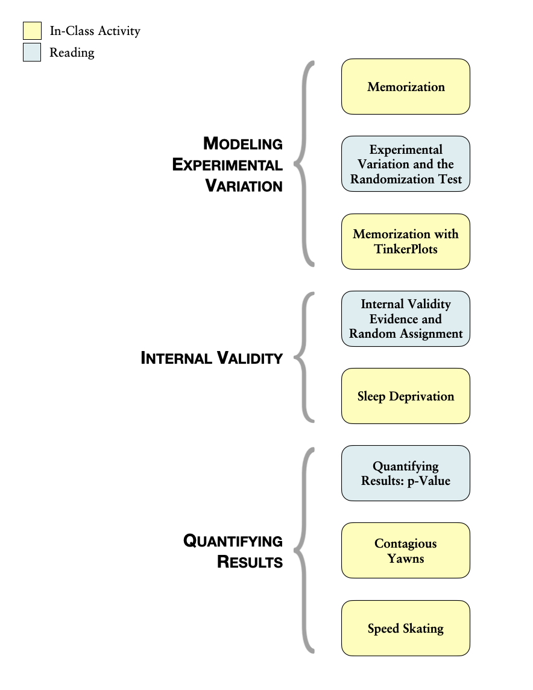

Experimental Variation and the Randomization Test
The nature of doing science, be it natural or social, inevitably calls for comparison. Statistical methods are at the heart of such comparison, for they not only help us gain understanding of the world around us but often define how our research is to be carried out.1
Drawing inferences about the differences between groups is an almost daily occurrence in the lives of most people. In any given hour of any given day, television, radio and social media abound with comparisons. For example, data scientists at OKCupid, an online dating site, examined whether frequent tweeters (users of Twitter) have shorter real-life relationships than others.2
Group comparisons are at the heart of many interesting questions addressed by psychologists, physicians, scientists, teachers, and engineers. Questions about group differences are often studied through scientific experiments. When considering a scientific experiment to examine group differences, the design of the study plays a very important role. To help understand this, think about a researcher who is studying the efficacy of a new cold medication. Let’s say that the researcher has 100 people (each with a cold) who volunteer to be a part of her study. Let’s consider how she might design her study.
- Design 1: She gives the cold medicine to all 100 volunteers.
- Design 2: She gives the cold medicine to the first 50 volunteers (treatment group) and nothing to the other 50 volunteers (control group).
- Design 3: She randomly picks 50 of the volunteers to whom she gives the cold medicine (treatment group), and she gives nothing to the other 50 volunteers (control group).
All three designs have been used, and are still used, in research studies. There are pros and cons to each of the designs, and all are useful depending on what you want to know.
In Design 1, it is hard to judge the efficacy of the medication. For example, what if 60 of the volunteers had no cold symptoms after four days? Did the medication work? You might be thinking, “what would have happened if they hadn’t received any medication?” That is a great question. In this design, we don’t know.
Design 2 gives the researcher a comparison group. She can compare the number of volunteers in each group who have no cold symptoms after four days. This is a better design than Design 1 for examining efficacy. But, what if she found that after four days, 35 of the volunteers who got the medication had no symptoms, while only 25 of the volunteers who didn’t receive medication had no symptoms. Is this enough evidence for her to say the cold medication is effective? Probably not. Maybe most of the volunteers in the treatment group were already in later stages of their colds. Maybe they had more robust immune systems to begin with (e.g., due to differing exercise or nutrition habits) than the control group. You can imagine many such reasons that the treatment group would show quicker improvement than the control group.
Design 3 has the same comparison group advantage as Design 2. The big difference, however, is that the volunteers were put into the groups at random. By assigning participants at random, the researcher “equalizes” the treatment and control groups. What this means is that the groups have, on average, the SAME nutritional habits, the SAME exercise habits, and the SAME everything-else. That means that the only thing that is different between the two groups is that the treatment group got the cold medication and the control group didn’t. If the researcher uses this type of design, she can draw much stronger inferences about WHY the treatment group improved: it was because of the cold medication!
Experimental Variation
Let’s say our hypothetical researcher used a strong design in which she randomly assigned her volunteers to treatment and control groups. After four days she found that the treatment group had 35 of the 50 volunteers with no symptoms, and the control group had 27 of 50 volunteers with no symptoms. Could she conclude that the cold medication is effective since 8 more volunteers had no symptoms in the treatment group?
Actually no. And, the reason is because of experimental variation. Consider the situation where the treatment has absolutely NO EFFECT. In other words, it does nothing. Under that assumption, the treatment and the control groups should improve at about the same rate. Under the assumption of no treatment effect, differences between the treatment and control group are not a function of the cold medication. They are solely a function of random chance. Similar to the studies we looked at in Unit 2, we have to figure out how much chance variation is expected before we can say whether the difference of 8 volunteers is actually an improvement.
One key difference between this type of study and those in Unit 2 is that the chance variation arises from the assignment to groups in these studies, whereas in Unit 2, the chance variation arose because of sampling from a larger population. When the chance variation is due to the assignment of participants to groups, it is referred to as experimental variation rather than sampling variation.
Outline and Goals of Unit 3
The following schematic outlines the course readings, in-class activities, and assignments for Unit 3.
In the readings, course activities, and assignments in Unit 3, you will explore the process of modeling experimental variation to be able to evaluate observed differences between groups. You will learn about the randomization test (a Monte Carlo method for evaluating whether an observed result in compatible with experimental variation from a hypothesized model) and how to carry out this test using TinkerPlots™.